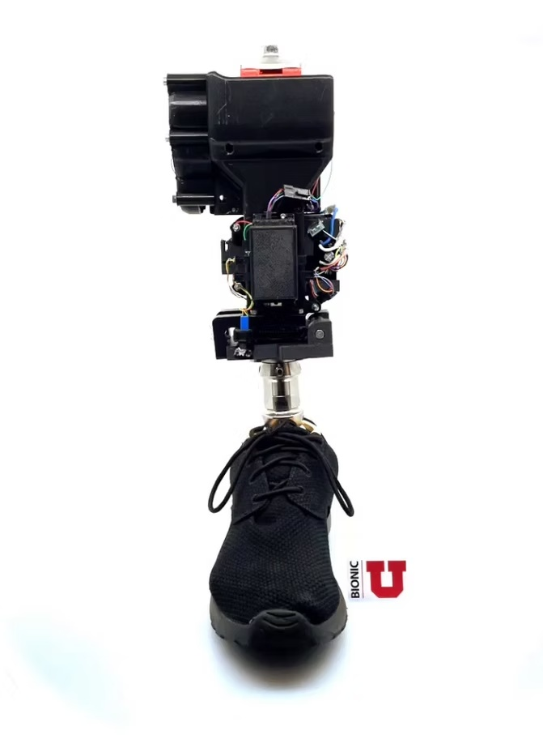
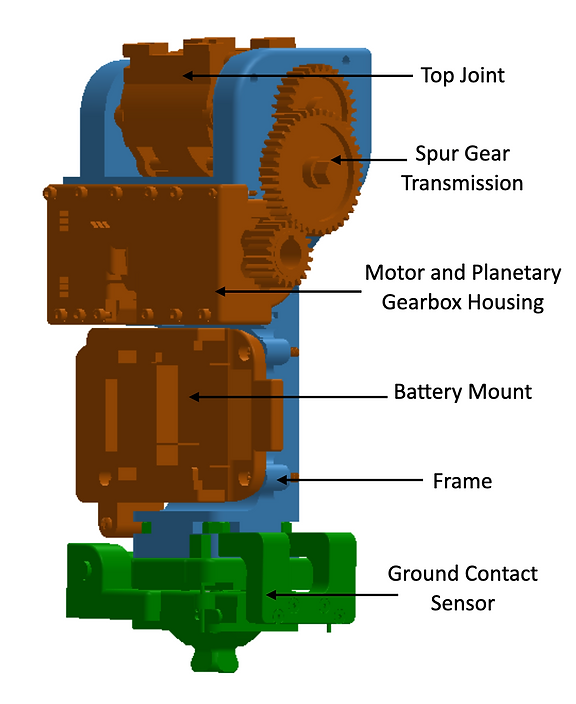
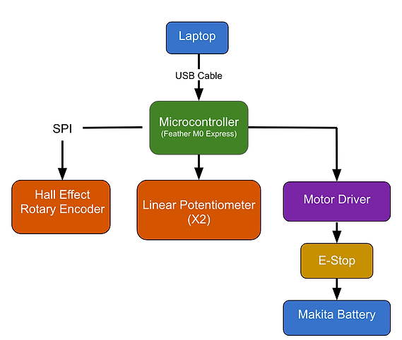
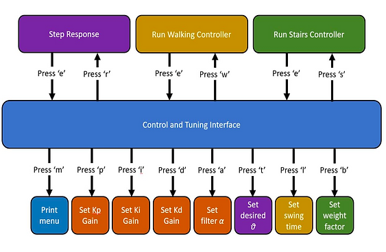
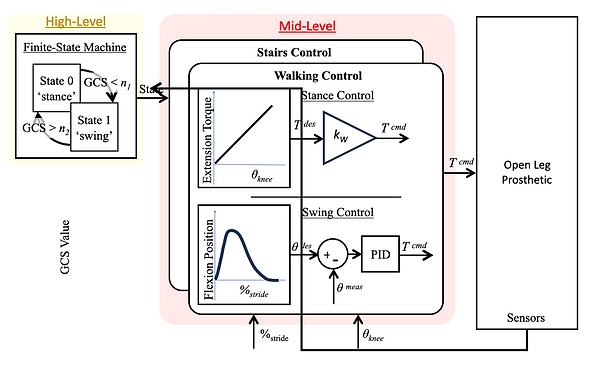
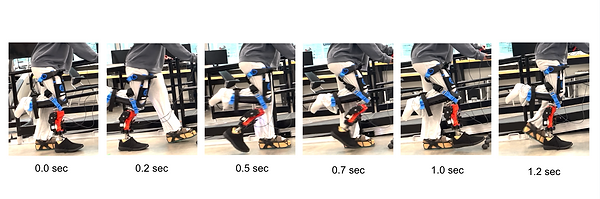
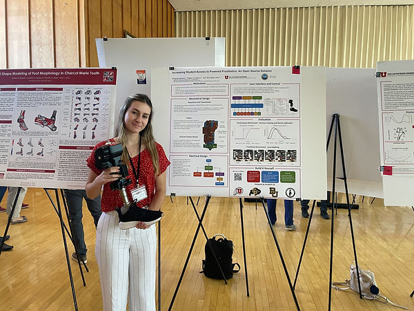

Ubuild Leg

My Role
Ubuild Leg originated as a graduate student project in a course taught by Dr. Tommaso Lenzi, the principal investigator of the Bionic Engineering Lab. The initial goal was to develop a low-cost powered prosthetic knee. After the first two iterations, Dr. Lenzi sought to expand the project into an educational platform that students worldwide could use to learn about engineering.
In summer 2023, I redesigned and refined the leg to improve its structural strength, simplify the design, and make its components more accessible to novice engineers. I developed new control code to improve walking and stair-climbing capabilities while making the software easier for collaborators to understand. I also created the educational website and wrote comprehensive assembly instructions.
Mechanical Design
The leg frame and all custom housings are 3D printed using standard entry-level 3D printers.
Powertrain and Transmission
A Makita drill motor, battery, and planetary gearbox power the robotic knee prosthesis during ambulation.
The drill’s planetary gearbox provides a 65:1 gear ratio. An additional 4:1 transmission between the gearbox and knee joint provides the speed and torque required for ambulation.
The knee joint has a 90-degree range of motion.
Frame
The frame provides structural support, houses the actuation system, and serves as the mounting structure for the other components.
The frame can support a 200-pound person with a factor of safety of 3.2. Bench-top testing confirmed its strength under a range of loading conditions.
Ground Contact Sensor (GCS)
The GCS is mounted at the bottom of the frame and detects whether the foot is in contact with the ground.
A hinged mechanism closes when weight is applied to the leg and opens when the leg is lifted.
Linear potentiometers measure the resulting displacement.


Electrical Design
I selected a Feather M0 Express microcontroller to exchange information with the peripheral components.
The motor driver is sourced from the Makita cordless drill.
Two linear potentiometers in the GCS provide information used to determine the ambulation phase.
A Hall-effect rotary encoder measures the knee-joint angle.
User Interface and Control
The user interface allows parameters to be adjusted and controllers to be selected without modifying the code or uploading it again to the microcontroller.
The available controllers include a step response for tuning, walking, and stair climbing.
PID control and interpolation support angle- and torque-based motor control.




Results
The leg can execute powered walking and stair climbing. Undergraduate students in the Bionic Engineering Lab are continuing the project, and a high school student completed a build using my instructions.
I presented the project at the Utah Biomedical Engineering Conference in September 2023.